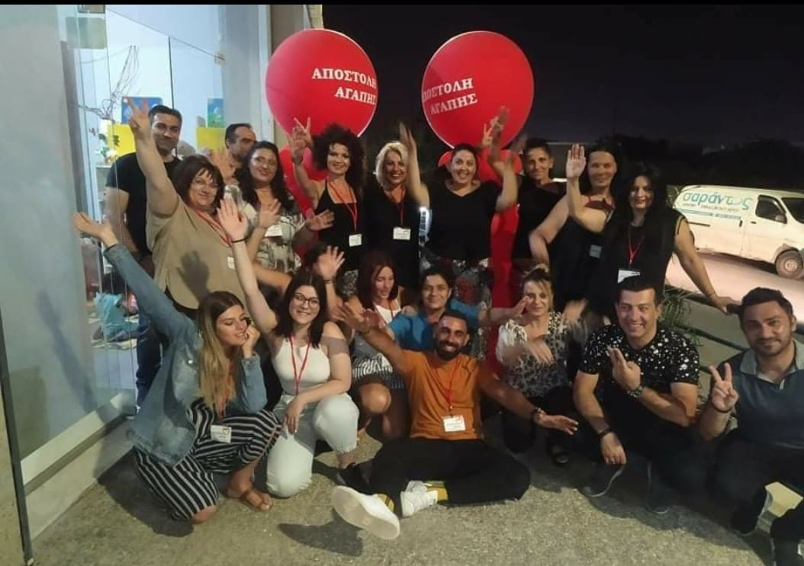
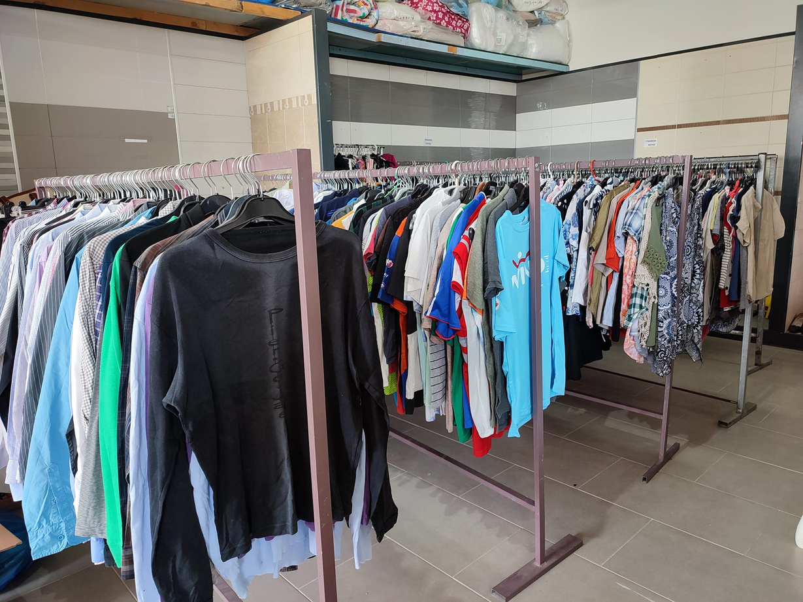
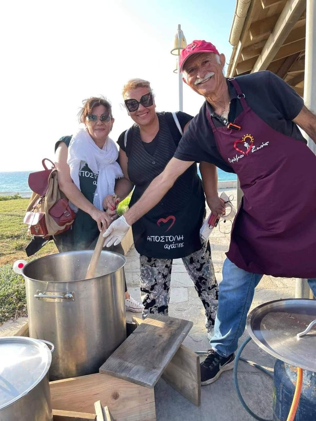
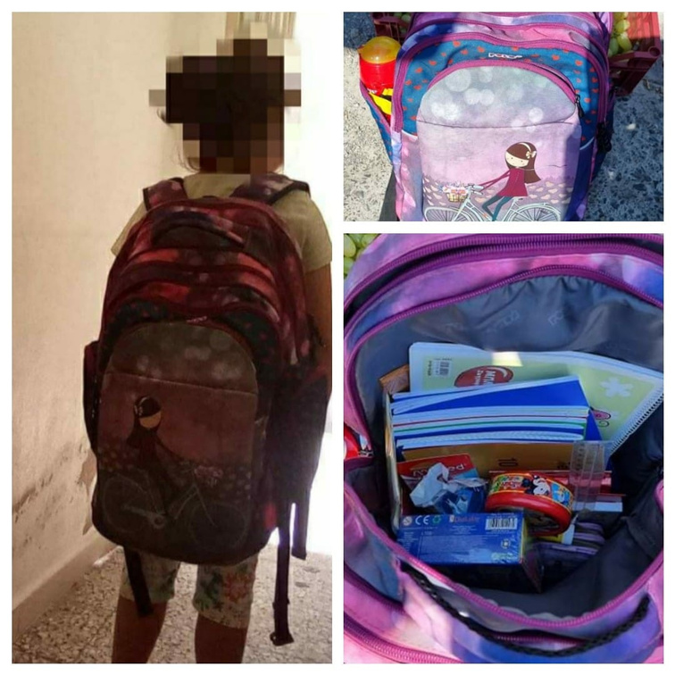
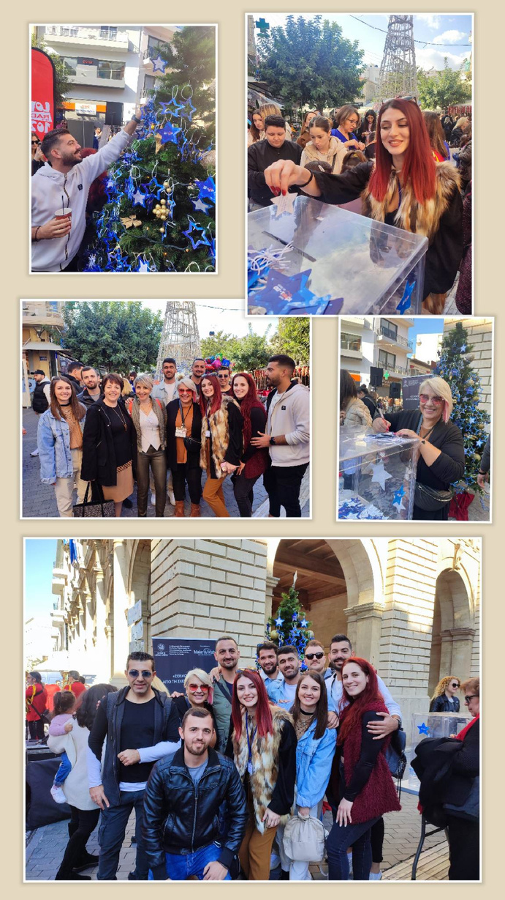

Monthly family support
Food, clothing and first-need items reach around 250 families every month.
Group presentation
A closer look at the group, its mission, its fields of action and its everyday impact.





Overview
Apostoli Agapis brings together volunteers with deep experience in solidarity work and community support in Crete.
Its work reaches families, children, young parents and vulnerable people with practical care that answers everyday needs.
The group remains active in local life, emergency response and humanitarian action, always relying on volunteers and supporters.
Fields of action
Food, clothing and first-need items reach around 250 families every month.
Children receive school supplies, activities and other support, while new parents receive baby essentials.
The group helps equip homes with furniture, appliances, blankets, bedding and other household items.
From quarantine meals to floods and earthquake relief, the team mobilizes quickly whenever a community is under pressure.
Its work also includes missions abroad, support for schools and institutions, and awareness actions around solidarity and social responsibility.
In numbers
families every month receive support with food and clothing
children receive school supplies each year
families were equipped with furniture and appliances
people with disabilities received wheelchairs